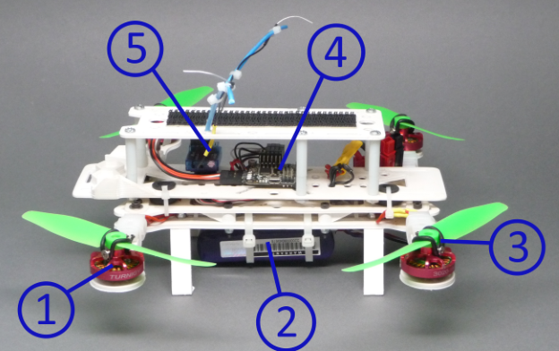
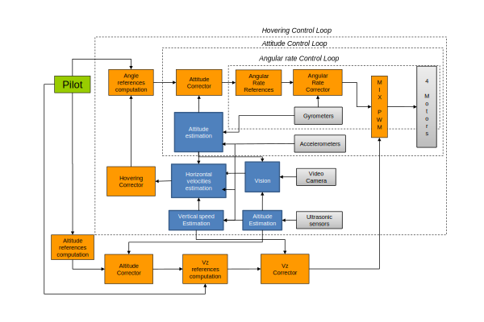

Hardware

Side view of a Quadcopter
Multi-rotor drones use a mix of standard radio-control plane parts and custom-designed hardware. The best way to
explain it is to use this image of a quadcopter as an example.
1. Brushless Motor
Quadcopters usually use small, brushless motors for their propellers.
2. Battery
Personal drones, like other remote-control vehicles, usually use high-capacity lithium batteries for power. Previously,
planes had to use NiCad and NiMH batteries. These batteries were so much heavier than the new lithium ones that older hobbyist designs which used
them for ballast would become unbalanced without them. Importantly for drones, though, lithium batteries can pack 17 watt-hours into just 129g,
providing tens of minutes of flight on a charge.
3. Prop Saver
4. Controller
5. R/C Receiver
Software
The control code needed needed to operate a multi-rotor drone is very complicated, much more so than a regular airplane.
First, to keep the drone level, the controller must constantly monitor the gyroscope and make minute adjustments to the speed of each
propeller. Second, to move horizontally, the propellers on one side of the drone must be sped up, which tilts that side up. This tilting,
as well as the acceleration it causes, must also be fed into the leveling algorithm so that the drone doesn't tip over. Finally, to
turn the drone, the propellers that spin one direction
are sped up, and the ones that spin the other way are slowed down. To further complicate things, all of these functions require complex PID (Proportional Integral
Derivative) control algorithms so that they remain as stable as possible. These algorithms must be carefully tuned for each and every drone using them,
and require knowledge of calculus to understand. So, the nature of multicopters mandates that they have quite complicated control programs.

Drone Control Loop (3)